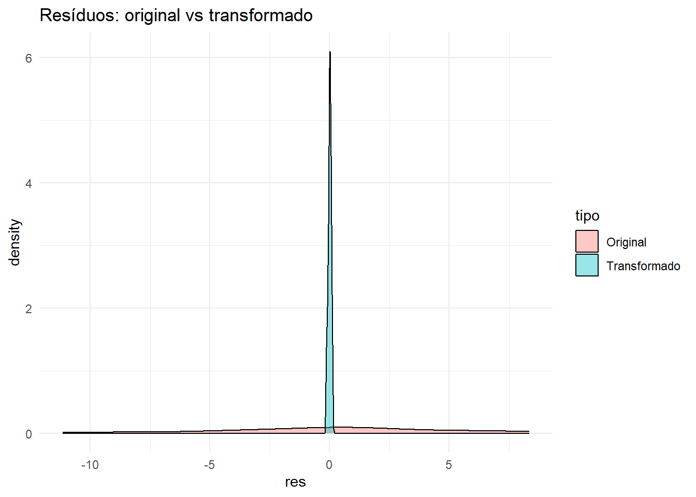

Durante a análise de experimentos florestais, nem sempre os dados atendem aos pressupostos da ANOVA: variâncias podem diferir entre tratamentos (heterocedasticidade), os resíduos podem ser assimétricos ou não normais, e há limites naturais da escala (proporções/contagens) que distorcem a variabilidade. Esses problemas afetam os testes F e t, pois violam as hipóteses de normalidade e homogeneidade do erro experimental.
💡 Nesses casos, aplicamos transformações matemáticas na variável resposta para aproximar a normalidade e estabilizar variâncias, preservando a estrutura experimental e a interpretação do delineamento.
11.2 🎯 Objetivos de aprendizagem
Verificar pressupostos (normalidade e homogeneidade) com testes e gráficos.
Escolher e aplicar transformações adequadas (arco seno da raiz, raiz quadrada, log).
Reanalisar com ExpDes.pt e interpretar na escala original.
Produzir gráficos antes/depois da transformação para comparar distribuições e resíduos.
11.3 🧠 Fundamentação teórica resumida
A ANOVA assume erros \(\varepsilon \sim N(0,\,\sigma^2)\) (independentes, variância constante e normalidade). Quando isso não se sustenta, utilizamos transformações clássicas:
Tipo de variável (ou problema)
Transformação sugerida
Expressão
Observações
Proporções/percentuais (0–100%)
Arco seno da raiz
\(y' = \arcsin(\sqrt{y/100})\)
Estabiliza variâncias; interpretar na escala original: \(\sin^2(y')\times 100\).
Contagens (n)
Raiz quadrada
$y’ = $
Padrão Poisson-like; “+0.5” evita raiz de zero.
Assimetria positiva (pesos/tempos)
Log
\(y' = \ln(y) \) ou \( \ln(y+1)\)
Reduz assimetria; cuidado com zeros.
Variância cresce com a média
Inversa da raiz
\(y' = 1/\sqrt{y}\)
Casos extremos; interpretação menos intuitiva.
Percentuais muito próximos de 0 ou 100
Arco seno ajustado
\(y' = \arcsin(\sqrt{(y+0.5)/100})\)
Suaviza extremidades (0 e 100).
Dica
Prática — Sempre cheque resíduos x valores ajustados, histograma e QQ-plot, antes e depois da transformação.
Se homogeneidade e normalidade melhorarem e as conclusões forem coerentes, a transformação foi bem-sucedida.
11.4 🌳 EXEMPLO — Controle de doença (percentual)
Contexto: quatro métodos de controle (biológicos e químico) aplicados ao viveiro de Eucalyptus para reduzir incidência de doença (%). DIC com 5 repetições por tratamento.
# ANOVA (dados na escala original)out0 <-dic(trat = dados$Tratamento, resp = dados$Incidencia, quali =TRUE)
------------------------------------------------------------------------
Quadro da analise de variancia
------------------------------------------------------------------------
GL SQ QM Fc Pr>Fc
Tratamento 3 1197.85 399.28 14.204 8.9567e-05
Residuo 16 449.76 28.11
Total 19 1647.61
------------------------------------------------------------------------
CV = 24.19 %
------------------------------------------------------------------------
Teste de normalidade dos residuos ( Shapiro-Wilk )
Valor-p: 0.8521957
De acordo com o teste de Shapiro-Wilk a 5% de significancia, os residuos podem ser considerados normais.
------------------------------------------------------------------------
------------------------------------------------------------------------
Teste de homogeneidade de variancia
valor-p: 0.4642806
De acordo com o teste de bartlett a 5% de significancia, as variancias podem ser consideradas homogeneas.
------------------------------------------------------------------------
Teste de Tukey
------------------------------------------------------------------------
Grupos Tratamentos Medias
a T4_Testemunha 34.96
b T1_BiologicoA 20.42
b T3_Quimico 16.62
b T2_BiologicoB 15.66
------------------------------------------------------------------------
Código
# Pressupostosmod0 <-aov(Incidencia ~ Tratamento, data = dados)shapiro.test(residuals(mod0))
Shapiro-Wilk normality test
data: residuals(mod0)
W = 0.97486, p-value = 0.8522
Código
bartlett.test(Incidencia ~ Tratamento, data = dados)
Bartlett test of homogeneity of variances
data: Incidencia by Tratamento
Bartlett's K-squared = 2.5615, df = 3, p-value = 0.4643
11.4.2 Transformação arco seno da raiz
Código
dados <- dados |>mutate(inc_asin =asin(sqrt(Incidencia/100)))out1 <-dic(trat = dados$Tratamento, resp = dados$inc_asin, quali =TRUE)
------------------------------------------------------------------------
Quadro da analise de variancia
------------------------------------------------------------------------
GL SQ QM Fc Pr>Fc
Tratamento 3 0.162278 0.054093 13.196 0.00013564
Residuo 16 0.065587 0.004099
Total 19 0.227865
------------------------------------------------------------------------
CV = 13.34 %
------------------------------------------------------------------------
Teste de normalidade dos residuos ( Shapiro-Wilk )
Valor-p: 0.4745937
De acordo com o teste de Shapiro-Wilk a 5% de significancia, os residuos podem ser considerados normais.
------------------------------------------------------------------------
------------------------------------------------------------------------
Teste de homogeneidade de variancia
valor-p: 0.7539271
De acordo com o teste de bartlett a 5% de significancia, as variancias podem ser consideradas homogeneas.
------------------------------------------------------------------------
Teste de Tukey
------------------------------------------------------------------------
Grupos Tratamentos Medias
a T4_Testemunha 0.6308934
b T1_BiologicoA 0.4658706
b T3_Quimico 0.4183053
b T2_BiologicoB 0.4046276
------------------------------------------------------------------------
Código
mod1 <-aov(inc_asin ~ Tratamento, data = dados)shapiro.test(residuals(mod1))
Shapiro-Wilk normality test
data: residuals(mod1)
W = 0.9564, p-value = 0.4746
Código
bartlett.test(inc_asin ~ Tratamento, data = dados)
Bartlett test of homogeneity of variances
data: inc_asin by Tratamento
Bartlett's K-squared = 1.1962, df = 3, p-value = 0.7539
11.4.3 Visualização comparativa
Código
# Densidade dos resíduos (antes/depois)res0 <-data.frame(tipo="Original", res =residuals(mod0))res1 <-data.frame(tipo="Transformado", res =residuals(mod1))rbind(res0,res1) |>ggplot(aes(res, fill=tipo)) +geom_density(alpha=.4) +labs(title="Resíduos: original vs transformado") +theme_minimal()

11.4.4 Retradução das médias
A média transformada \(\bar{y}'\) pode ser reescrita como percentual pela regra \(\hat{p} = [\sin(\bar{y}')]^2\times 100\).
Código
# Médias por tratamento (transformadas e retraduzidas para %)medias_inc <- dados |>group_by(Tratamento) |>summarise(med_asin =mean(inc_asin), .groups="drop") |>mutate(media_perc = (sin(med_asin)^2)*100)medias_inc
Realize a análise, teste os pressupostos e aplique a transformação adequada. Ao final apresente as médias na escala original.
Dica
Com dados de contagem (Poisson) usa-se a transfromação com a raiz quadrada, então para transfromar de volta usa-se \(\hat{y} \approx (\bar{y}')^2 - 0.5\)
11.6 ✅ Síntese
Transformações não são truque, mas um ajuste de escala para cumprir pressupostos.
Escolha baseada no tipo de variável e no padrão de heterogeneidade.
Reavalie sempre normalidade e homogeneidade após transformar.
Relate as conclusões na escala original (com a regra de retradução correspondente).